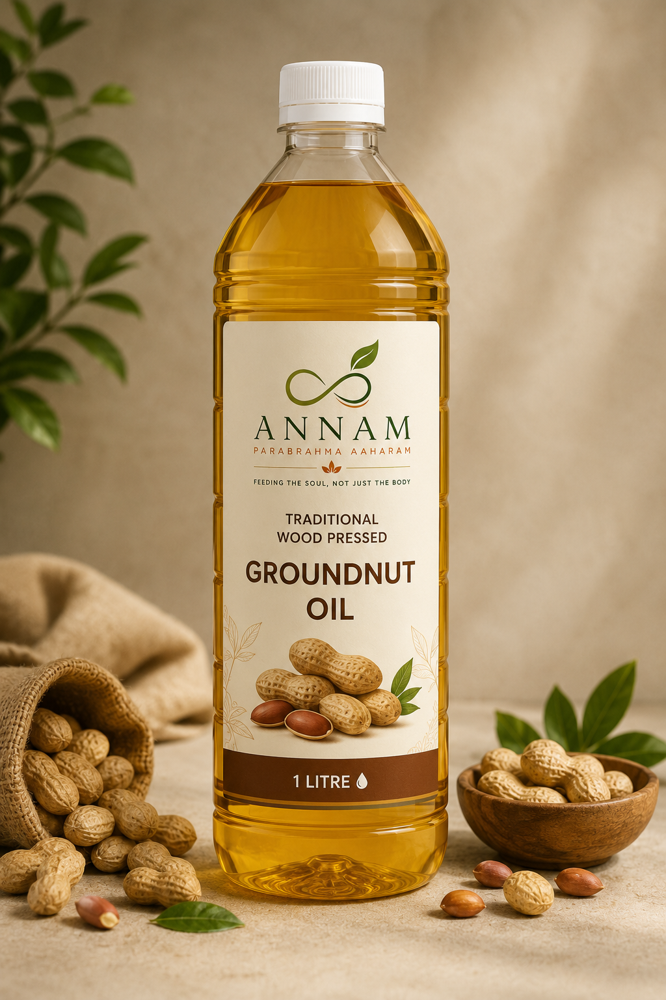
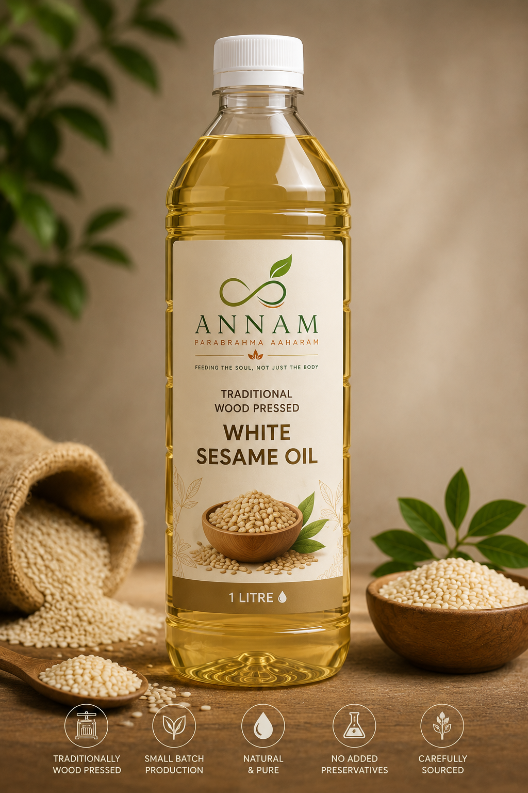
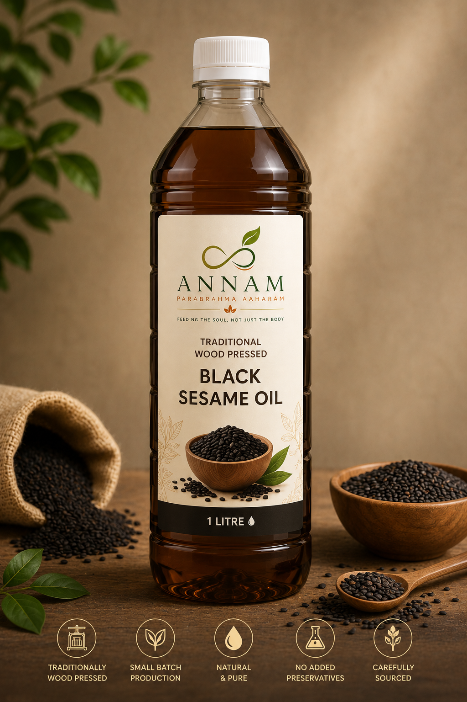
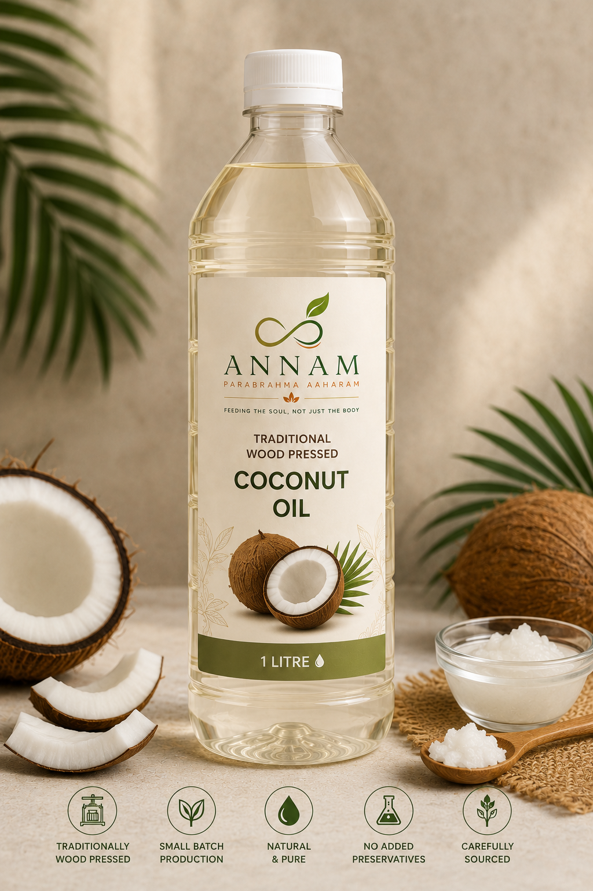
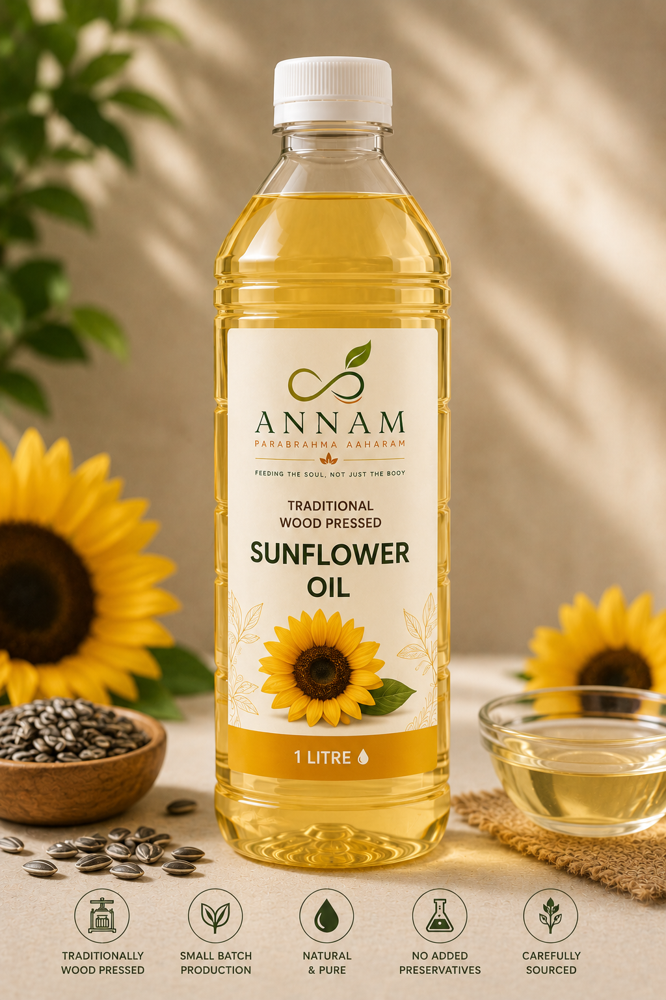
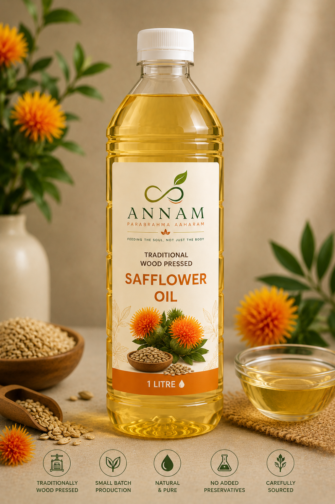

Oils are among the most frequently used ingredients in everyday cooking, yet few of us pause to think about how they are produced.
At Annam Parabrahma Aaharam, we believe that understanding our food begins with understanding its journey.
Our Traditional Oils Collection is being developed with a focus on traditional extraction methods, authenticity and greater awareness about the choices we make every day.
Because better food choices often begin with the ingredients we use the most.
The method used to extract oil can influence its character, aroma and traditional culinary value.
For generations, oils were prepared using slow extraction methods that prioritised care over speed.
While modern production has increased efficiency, many people continue to appreciate traditional methods for their connection to heritage and food culture.
Our collection reflects this appreciation for tradition while encouraging greater awareness about everyday food choices.
Every oil in our collection reflects our appreciation for traditional food wisdom, thoughtful sourcing and conscious food choices.

A traditional everyday cooking oil valued for its versatility, natural aroma and long-standing place in Indian kitchens.
Launching Soon

Prepared from carefully selected white sesame seeds and appreciated for its mild flavour and suitability for traditional recipes.
Launching Soon

Known for its rich aroma and traditional significance, black sesame oil has been valued in Indian food culture for generations.
Launching Soon

Naturally aromatic and widely used in South Indian cuisine and traditional food preparation.
Launching Soon

A light and versatile oil suitable for a variety of everyday cooking applications.
Launching Soon

A traditional alternative cooking oil appreciated by many households for its distinctive characteristics.
Launching Soon
We are thoughtfully developing our Traditional Oils Collection and look forward to sharing more details as the journey progresses.
Every product category we build reflects our commitment to encouraging better food choices and greater awareness about the relationship between food, health and nature.